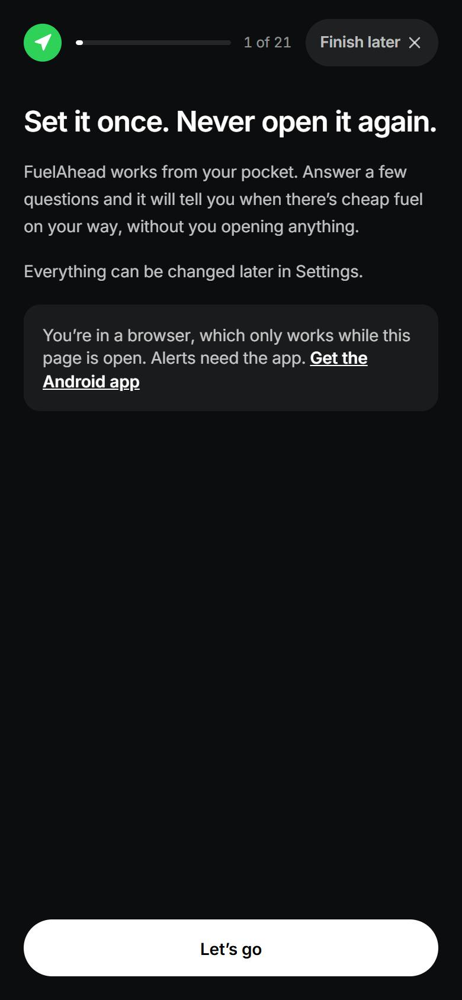
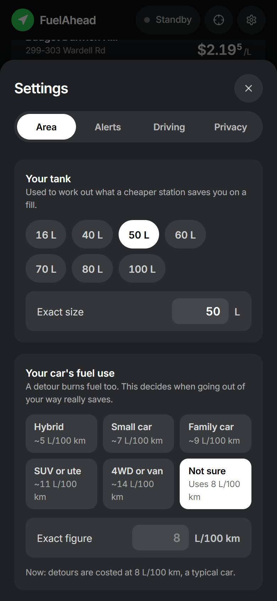
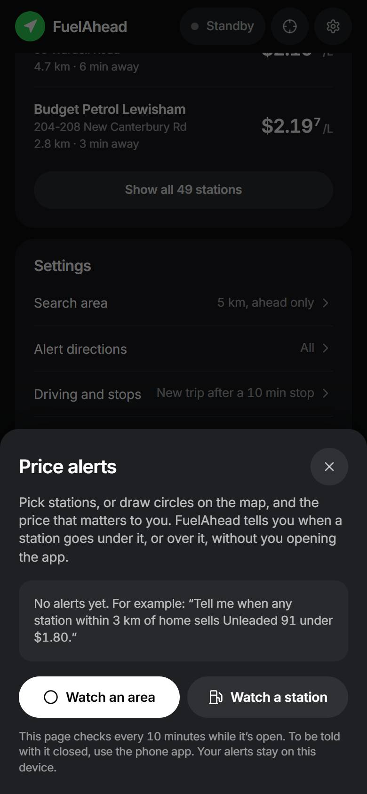

HANDS-FREE RIDER & DRIVER RADAR
iOS • Android • Web (v1.10)
Cloudflare Edge + NSW FuelCheck v2
FuelAhead NSW
The set-and-forget fuel radar built for motorcycle helmets and car dashboards. Automatically detects when you start driving, scans a 90° forward spatial cone along your heading or typed route, calculates true detour fuel burn per 100 km, and speaks the cheapest station ahead over Cardo, Sena, AirPods, or CarPlay without touching your phone.
90°
±45° Forward Cone
Haversine & forward azimuth filtering excludes stations behind you and calculates true detour minutes.
72/day
Cron Circuit Breaker
Variable NSW FuelCheck API v2 polling (10m peak, 30m shoulder, 60m overnight) stays under the 2,500/mo cap.
- Coordinate-Delta Auto-Start: Transitions into Driving Mode automatically once ground speed exceeds 15 km/h for 60s, and stops GPS while parked on iPhone to save battery.
- True Detour Cost Math: Factors in your vehicle's exact tank size (L) and fuel use per 100 km so a cheaper price never loses money on the detour drive.
- Typed Routes & Price Alerts: Save usual commutes with part-way alerts, or watch specific stations and map circles for price drops.
- Helmet Intercom & Siri TTS: Emits iOS
timeSensitiveand AndroidIMPORTANCE_HIGHnavigation alerts read aloud hands-free.

FuelAhead NSW v1.10 • Live Forward Cone Radar


